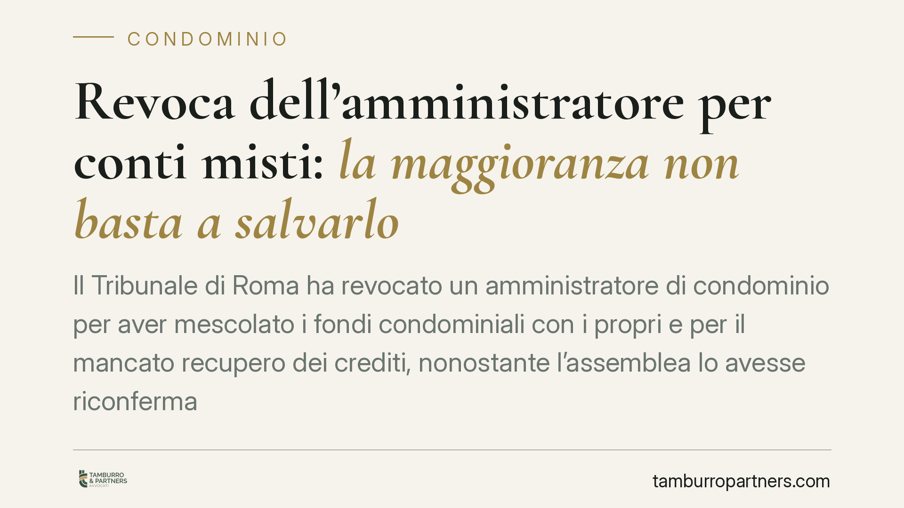

Revoca dell'amministratore per conti misti: la maggioranza non basta a salvarlo
Il Tribunale di Roma ha revocato un amministratore di condominio per aver mescolato i fondi condominiali con i propri e per il mancato recupero dei crediti, nonostante l'assemblea lo avesse riconfermato. La decisione ribadisce un principio netto: il voto di maggioranza non sana le gravi irregolarità di gestione, che restano sindacabili dal giudice su ricorso anche di un singolo condomino.

Il caso
Un condomino romano ha chiesto al Tribunale la revoca dell'amministratore contestando due condotte precise: la mescolanza tra il patrimonio del condominio e quello personale dell'amministratore, e l'inerzia nel recupero delle somme dovute dai morosi.
L'assemblea, nel frattempo, aveva riconfermato l'amministratore. Un dato che, in astratto, sembrerebbe chiudere la questione. Il Tribunale di Roma, Quinta Sezione Civile, ha invece disposto la revoca, chiarendo che la fiducia della maggioranza non copre le violazioni di legge.
Inquadramento normativo
Il riferimento è l'art. 1129, comma 11, del Codice civile. La norma prevede che ciascun condomino possa chiedere la revoca giudiziale dell'amministratore in presenza di gravi irregolarità. Tra queste, il comma 12 dello stesso articolo indica espressamente la mancata apertura o utilizzazione del conto corrente dedicato e la confusione tra la gestione condominiale e quella personale o di altri condomìni.
La gestione separata dei fondi non è una formalità: risponde all'esigenza di rendere tracciabile ogni movimento e di proteggere il denaro dei condomini da eventuali problemi patrimoniali dell'amministratore. Il conto "dedicato" impone che le somme del condominio transitino esclusivamente su un rapporto intestato al condominio stesso.
Sul piano processuale, la revoca segue il rito camerale dell'art. 737 del Codice di procedura civile: procedimento snello, in camera di consiglio, che consente una decisione rapida senza le formalità del giudizio ordinario.
Perché la riconferma non basta
Il punto centrale della decisione è il rapporto tra volontà assembleare e controllo giudiziale. L'assemblea può nominare, riconfermare o revocare l'amministratore per ragioni di opportunità. Ma quando emergono gravi irregolarità nella gestione, il rimedio della revoca giudiziale opera su un piano diverso: tutela la legalità della gestione, non la sola convenienza politica della maggioranza.
In altre parole, la maggioranza non può "sanare" con un voto la confusione dei fondi o l'omesso recupero dei crediti. Diversamente, il singolo condomino resterebbe privo di tutela ogni volta che i suoi interessi collidono con quelli del gruppo maggioritario, magari legato all'amministratore da rapporti di fiducia personale.
Implicazioni pratiche
Per i condomini, la sentenza rafforza uno strumento di garanzia individuale. Anche chi si trova in minoranza può attivarsi contro una gestione opaca, senza dover attendere un cambio di equilibri assembleari.
Per gli amministratori, il messaggio è altrettanto chiaro. La riconferma non è uno scudo. Restano centrali due obblighi:
- Separazione dei conti. Ogni euro del condominio deve transitare sul conto dedicato. Non sono ammesse compensazioni con fondi personali, prelievi "in conto" o gestioni di cassa promiscue.
- Diligenza nel recupero crediti. L'art. 1129 impone all'amministratore di agire per la riscossione dei contributi. L'inerzia protratta è di per sé irregolarità rilevante.
È inoltre utile che il condominio valuti l'affiancamento di un revisore contabile, figura prevista dalla disciplina come strumento di verifica esterna della gestione economica.
Cosa fare in concreto
- Verificate l'intestazione del conto. Chiedete estratto conto e certificazione bancaria: le somme devono risultare intestate al condominio, non all'amministratore.
- Controllate lo stato dei morosi. Domandate in assemblea l'elenco aggiornato dei crediti e le azioni di recupero intraprese, con date e importi.
- Documentate le irregolarità. Conservate rendiconti, verbali e comunicazioni: il ricorso ex art. 737 c.p.c. richiede prova puntuale delle gravi irregolarità.
- Non confidate solo nell'assemblea. Se la maggioranza copre la cattiva gestione, valutate il ricorso giudiziale individuale, che prescinde dal voto.
- Fatevi assistere per il ricorso. Il procedimento è tecnico: consigliamo di predisporre l'istanza con supporto legale per centrare i presupposti richiesti.
La decisione romana consolida un orientamento a tutela della trasparenza gestionale. Chi amministra risponde della correttezza dei conti prima ancora che del gradimento della maggioranza.
---
Contributo informativo a cura di Tamburro & Partners - Avv. Giuseppe Tamburro. Non costituisce parere legale.
Ogni condominio ha una storia a sé.
Se gestisci un'amministrazione e vuoi un confronto su una specifica questione condominiale, scrivi allo studio. Ti rispondiamo entro un giorno lavorativo.